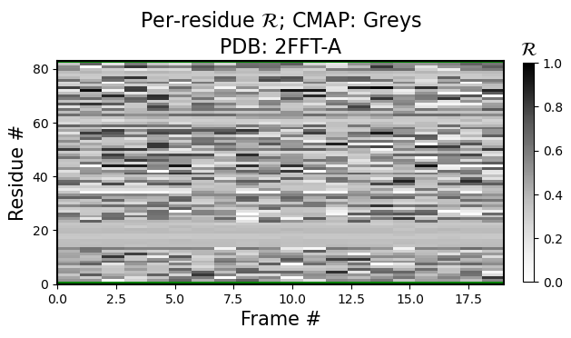
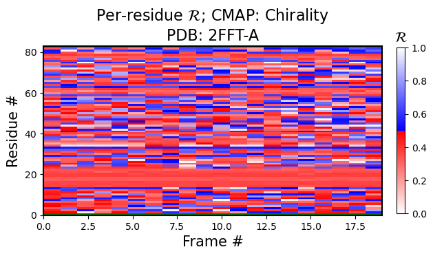
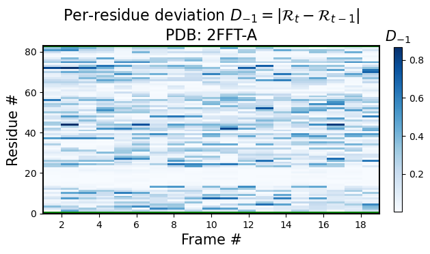

Downloading and viewing a PDB from RCSB
So far, we have gone through loading PDBs locally. This script walks you through the process of accessing a PDB from the internet without having to create a file.
[1]:
import backmap
import requests # For accessing the PDB website
import io # For treating a block text of text as a filehandle
# Identifying a PDB to view by its PDB ID
PDBID = "3E07"
PDBID = "8SHM"
PDBID = "1SP7"
PDBID = "2FFT"
# This is the structure of a URL that downloads a non-zipped PDB from RCSB.ORG
URL = f'https://files.rcsb.org/download/{PDBID}.pdb'
# "Downloading" (really, requesting)
response = requests.get(URL)#, stream=True)
# Accessing the PDB text
pdb_block = response.text
# Here, we could create a temporary file, save the text to the file
# and then provide the temporary filename to backmap, as done in the walkthrough
#with open('deme.pdb','wt') as f:
# f.write(pdb_block)
# Instead of unnecessarily saving the file to your file system, you can use
# StringIO to convert the file into a filehandle
fh = io.StringIO(pdb_block)
# You can skip the next line, but then the PDB ID information will be missing
# in the graphs
fh.name = URL
# Analyzing the PDB and creating a new row "R"
structure_df = backmap.process_PDB(fh)
# Displaying this data in multiple formats
should_be_true, figure_dict = backmap.draw_figures(structure_df=structure_df, output_dir='', write=False, show=True)
---- ---------
1 Ramachandran number (PDB: https://files.rcsb.org/download/2FFT.pdb)



2. Histogram (PDB: 1xqq)

3. RMSF (PDB: 2FFT)

4. RMSD (PDB: 2FFT)

<Figure size 640x480 with 0 Axes>